AgnesLink Channel
Story behind my Singing

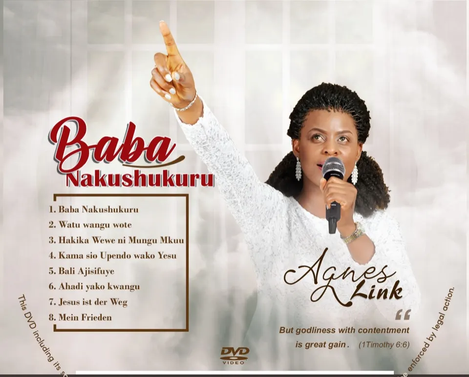
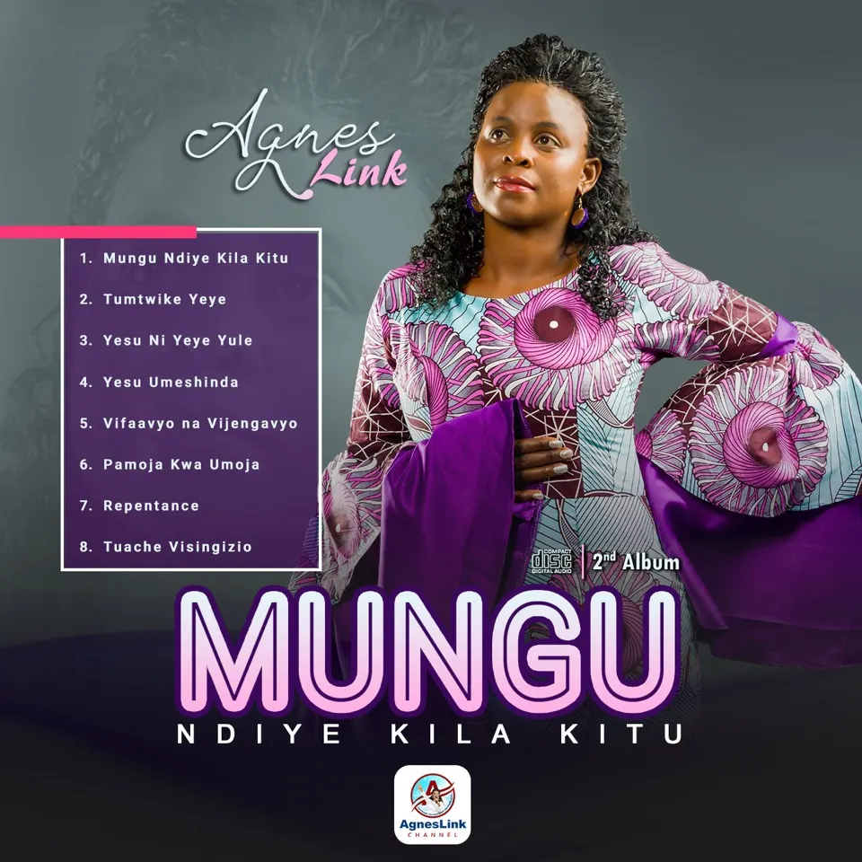
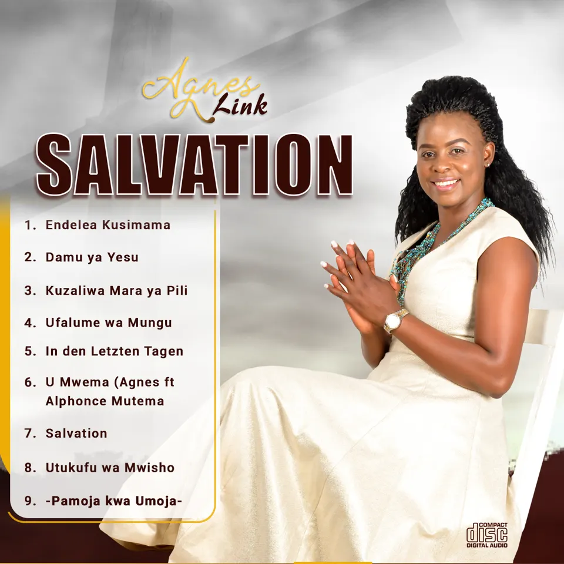
Story behind my singing
It was July 2018 when I had a vision seeing myself singing. I trusted God for something which is merely impossible, and I knew it is not possible. But I decided to make it possible by applying faith following the word of God in the book of Mathew 28:18 “Jesus has all the authority in Heaven and on earth. It became possible and I was so much overwhelmed. In the middle of praying thanking God, I saw myself singing a thankful song while wearing a white dress. Then it kept burning in my heart so strongly that I should sing. I thought of a singer called Brother Joshua, I met him in United Kingdom year 2010. I searched his name on Facebook and texted him. The next day it happens he responded, and I requested him to help me to sing the song I wanted. He said no problem just write what you wish to sing. I wrote and send to him.
In September 2018 I took a trip to Tanzania and met Joshua and did some practice for the song and on september 7 the song was recorded in Shekinah Studio. The song happens to come out good and I liked it. Joshua saw that I can sing mentioning having no singing background it was amazing I could learn very fast in getting the song produced. According to Joshua, this proves if I decide and do more practices, I can grow and become a good Singer. Then I wrote another two songs giving me three songs already.
Back in Germany I have played and sang the songs to relatives and friends around me and everybody seem to like them regardless of been sang in Kiswahili. The feeling I get that people like the songs encouraged me to put more energy to keep singing. I planned journey to Tanzania where I finished both recording and video shooting of my first album that carries 8 songs. The album is called BABA NAKUSHUKURU, meaning FATHER I THANK YOU, VATER ICH DANKE DIR. This album was well received and I was able to perform my singing and concerts not only in Germany but also in Tansania, Kenia, Mexico, USA.
Then it came my 3rd Album called SALVATION
2021 I will lounch my 4th ALBUM that carries 10 Songs. Stay tuned to get more updates.
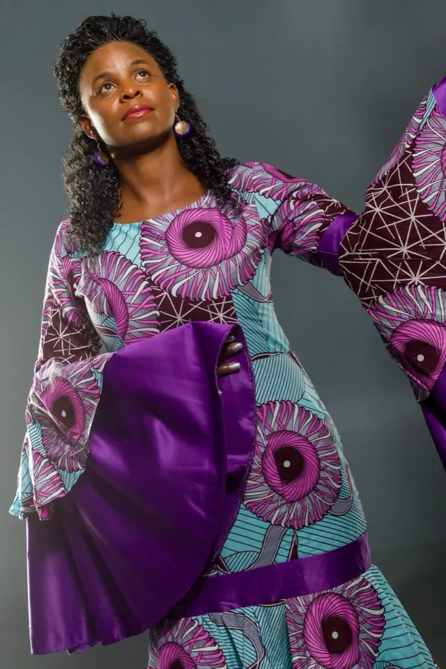
<b>A Big baobao Tree started small</b> & that's how Agnes started her singing Journey
It is small things that starts small and humbly always bring great impacts. Most times people see things and never consider the process taken to make them the way they are. The long the process the bigger the destiny.The deeper the process the greater the outcomes. As I work with young people, together bringing new ways and techniques for new self employment, my message always "There is no one night success". We must be ready to go through the process step by step.
When I started singing as a person who is 30s age and never even try to sing or dream to sing before, I was discouraged mostly with my own feeling and thinking, that was ful of unaswered questions. I was also challenged by people who asked me who will listern to your songs? who knows you? nobody knows you as a Singer. My reply was always, the singing I do is a pure gift from God and that why the slogan of my music is PURE GOSPEL, PURE WORD OF GOD, PURE REALITY OF LIFE: It is a pure gift from God and I will follow His direction and so He will take care of all questions. Today my singing project has become not only bringing entertainment and Gospel message to the world but also has become a big sponsor in Supporting Agri-Connect TANZANIA - suppport youth to support themselves.
As I started "SEEDING" process has been the major method which has brought my music to many parts and to millions of People all over the world. On this page you will read and know what i did in this "SEEDING PROCESS"
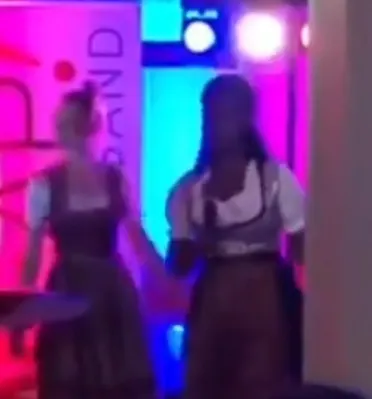
It was 10.11.2018, the first day I stood in front of people singing. It was more than 50 Guests who attended Regina's Birthday party. It was in Karben, Frankfurt in Germany.
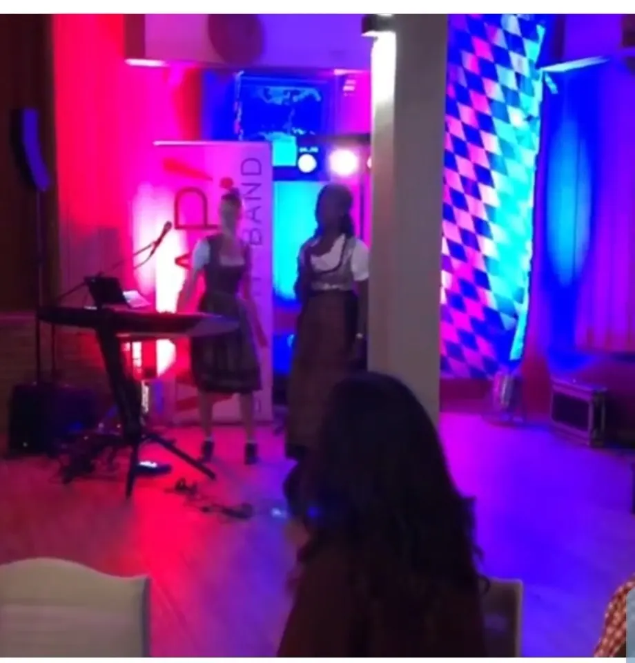
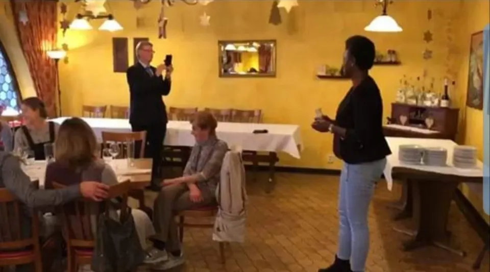
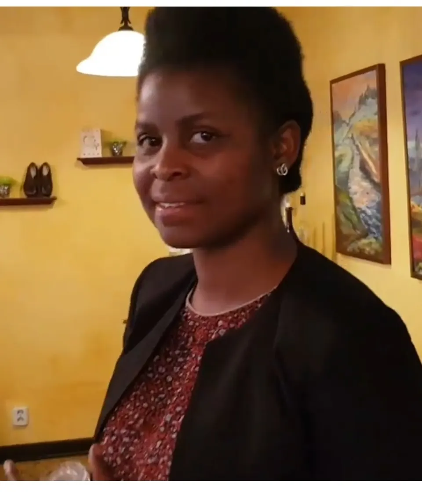
It was Hofbeiber, Frankfurt Germany on 3.12.2018. Two songs were performed "Baba nakushukuru and Watu wangu wote". The fun thing I did was to get myself in support away from shyness. I created an idea to use what I am holding in the hand as a Microphone. It was real good with its own special experience to me and to the audiance. My experience and confidence kept growing.
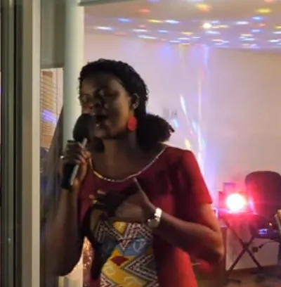
It was in Mexico City February 2019. One song "Baba Nakushukuru" was performed. Other places I performed in Mexico apart from Mexico City was also in Puebla. In this place "Ahadi yako kwangu" was sang. All these humble beggining performances are found AgnesLink Youtube channel.
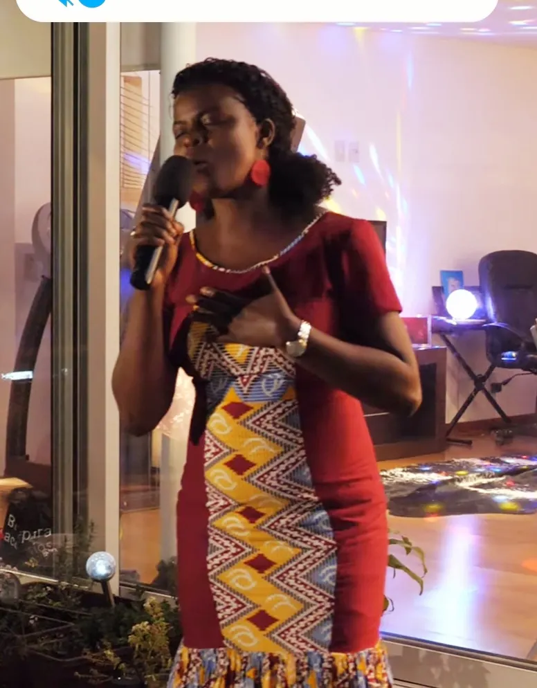
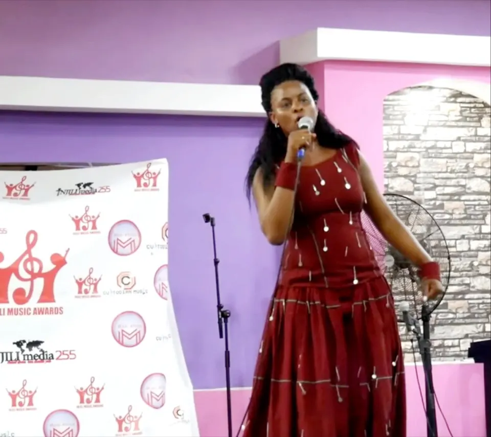
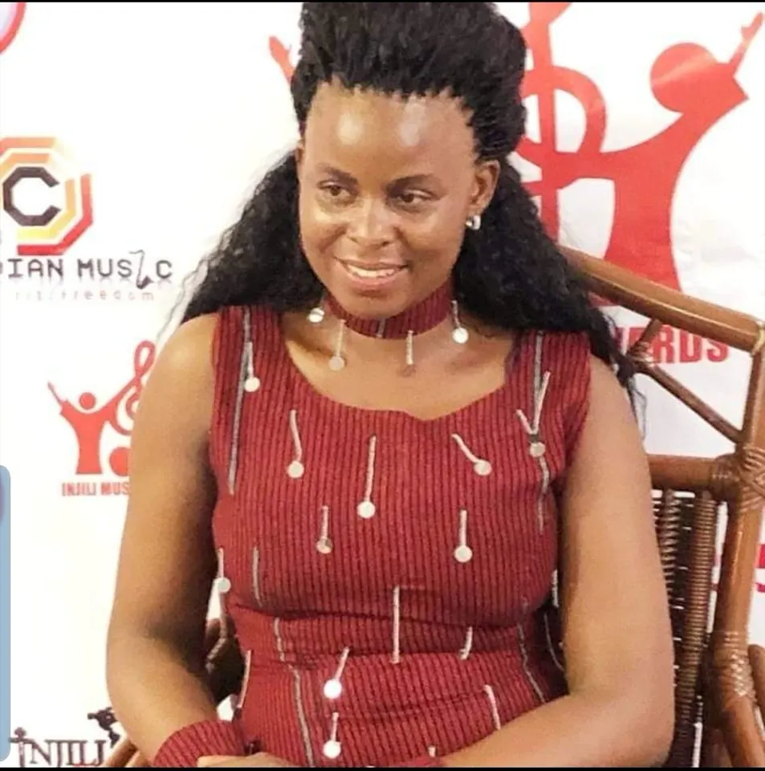
It was in Mombasa Kenya 4.8.2019. I performed Injili Music Awards Stage. It was a special good and positive experience in my singing journey particularly on performing.
"SEEDING" PROCESS IN MY SINGING JOURNEY
Seeding process i did has brought me to the stage I am today. Since I started singing I always have voice speaker in my handbag. I am ready always to sing wherever the chance happens. I have applied such flexibility method. And all became a seed which is now producing its fruits. Now many people know me as a Singer and they invite me to sing in their different sessions.
From one song Baba nakusukuru, to three more songs and later an album, today I have three albums which are already released while one and many more songs are still in the process.
I thank God
There is might power in applying seeding process that involves accepting the growing process from humble starting point. It is true it is real it has been the reality of my singing journey to today.
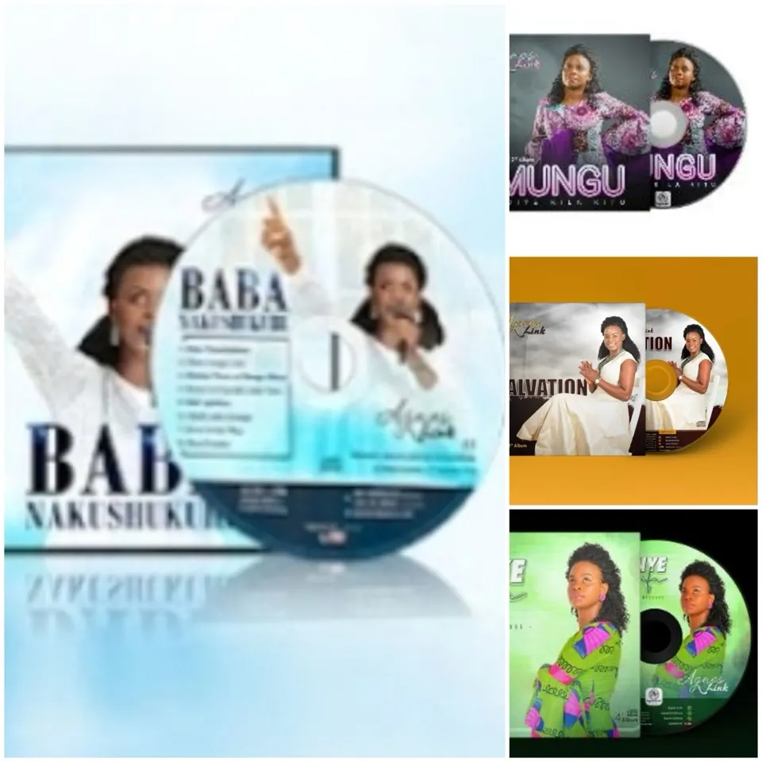
SEE MORE OF MY HUMBLE AND INEXPERIENSIVE PERFORMANCES
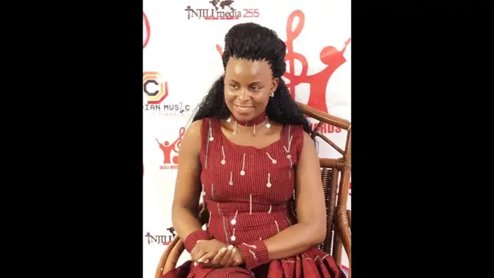
Opens YouTube in a new tabThe challenge of many to many things is "MAINTAINING" to the end. What proper and good we are today, may mean completely nothing, if it ends on the way. There is might power in being able to maintain our progresses when seeding process is applied. It involves accepting the growing process from humble starting point. Everything intended to bring great impacts that not only endures but also that carries succes that abides, must be given chance to take its stages step by step. Today after experiencing such and many more others, my message is, "Everything is possible and we must accept humble beginnings step by step. In it focus, determination and commitment must be applied. There is no one night success". My singing is true, is real, it has been happening and becoming the reality day by day.